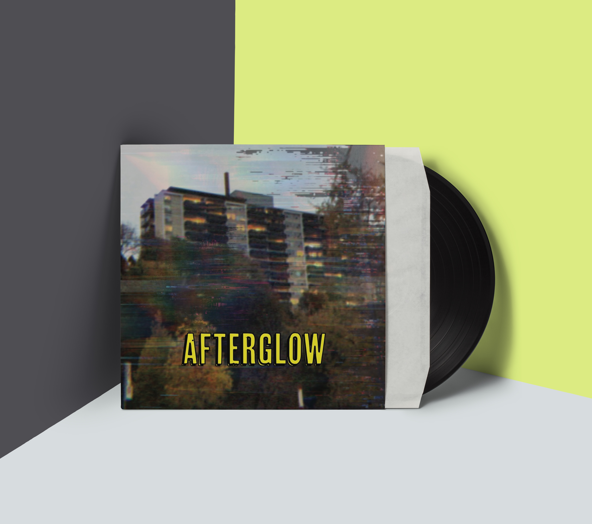

"Afterglow"
Information about the band:
Nova Rationale is a rising electro-pop collective known for blending cinematic synth production with deeply personal storytelling. Formed in 2022 in Toronto, the group began as a late-night project between producer Aiden Marlowe and vocalist Lira Vale, two friends who bonded over neon cityscapes, retro sound design, and the feeling of growing up in a world that moves too fast. Their music lives in the space between nostalgia and the future — shimmering with 80s-inspired warmth while pushing into modern digital textures. The name Nova Rationale reflects their style: explosive emotion paired with thoughtful, introspective writing. The band created Nuclear during a period of intense transformation in their lives. They describe it as an album about emotional volatility — the kind of relationships and memories that don’t fade quietly but instead erupt with the power of something radioactive. The late-night studio sessions, flickering CRT monitors, and glowing skyline views shaped the album’s identity, giving it a sense of both chaos and beauty.